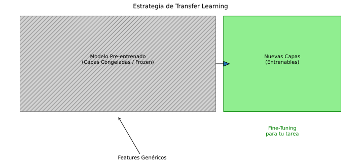

🔄 Unidad 7. Transfer Learning y Fine-Tuning
Transfer Learning es una técnica que aprovecha el conocimiento aprendido en un problema para aplicarlo a otro diferente. Es una de las técnicas más importantes en Deep Learning moderno.
7.1. ¿Qué es Transfer Learning?
Concepto
En lugar de entrenar una red desde cero, usamos una red preentrenada en un dataset grande (ImageNet, Wikipedia, etc.) y la adaptamos a nuestro problema específico.

Modelo Preentrenado Tu Problema
(ImageNet: 14M imágenes) (Tu dataset: 1000 imágenes)
│ │
│ Conocimiento │ Datos específicos
│ general │
▼ ▼
┌─────────────────────────────────────┐
│ Transfer Learning │
│ Combina ambos para obtener │
│ un modelo de alta calidad │
└─────────────────────────────────────┘
¿Por qué Funciona?
Las capas iniciales de una red aprenden características genéricas:
- Capas bajas: Bordes, texturas, colores.
- Capas medias: Patrones más complejos (ojos, ruedas).
- Capas altas: Conceptos específicos del problema.
Las características genéricas son transferibles a otros problemas.
7.2. Estrategias de Transfer Learning
Estrategia 1: Feature Extraction
Usar el modelo preentrenado como extractor de características fijas.
from tensorflow.keras.applications import VGG16
from tensorflow.keras import Sequential
from tensorflow.keras.layers import Dense, Flatten, Input
# Cargar modelo preentrenado SIN las capas de clasificación
base_model = VGG16(
weights='imagenet', # Pesos preentrenados
include_top=False, # Excluir capas de clasificación
input_shape=(224, 224, 3)
)
# CONGELAR todas las capas del modelo base
base_model.trainable = False
# Añadir nuestras capas de clasificación
model = Sequential([
base_model,
Flatten(),
Dense(256, activation='relu'),
Dense(10, activation='softmax') # 10 clases
])
model.compile(
optimizer='adam',
loss='categorical_crossentropy',
metrics=['accuracy']
)
model.summary()
Estrategia 2: Fine-Tuning
Descongelar algunas capas superiores del modelo base y reentrenarlas.
# Primero: entrenar solo las capas nuevas (feature extraction)
model.fit(X_train, y_train, epochs=10, validation_data=(X_val, y_val))
# Segundo: descongelar algunas capas del modelo base
base_model.trainable = True
# Congelar todas las capas excepto las últimas N
for layer in base_model.layers[:-4]: # Descongelar últimas 4 capas
layer.trainable = False
# Recompilar con learning rate muy bajo
model.compile(
optimizer=tf.keras.optimizers.Adam(1e-5), # LR muy bajo
loss='categorical_crossentropy',
metrics=['accuracy']
)
# Entrenar con fine-tuning
model.fit(X_train, y_train, epochs=10, validation_data=(X_val, y_val))
Comparación de Estrategias
| Estrategia | Cuándo Usar | Dataset |
|---|---|---|
| Feature Extraction | Dataset pequeño, similar al original | < 10,000 imágenes |
| Fine-Tuning Parcial | Dataset mediano, similar al original | 10,000 - 100,000 |
| Fine-Tuning Completo | Dataset grande, diferente al original | > 100,000 |
7.3. Modelos Preentrenados Populares
Para Imágenes (Computer Vision)
from tensorflow.keras.applications import (
VGG16, VGG19,
ResNet50, ResNet101, ResNet152,
InceptionV3, InceptionResNetV2,
MobileNetV2, MobileNetV3Small, MobileNetV3Large,
EfficientNetB0, EfficientNetB7,
DenseNet121, DenseNet201
)
# Ejemplo: cargar diferentes modelos
vgg = VGG16(weights='imagenet', include_top=False, input_shape=(224, 224, 3))
resnet = ResNet50(weights='imagenet', include_top=False, input_shape=(224, 224, 3))
efficientnet = EfficientNetB0(weights='imagenet', include_top=False, input_shape=(224, 224, 3))
Comparación de Modelos
| Modelo | Parámetros | Top-1 Acc ImageNet | Uso |
|---|---|---|---|
| MobileNetV2 | 3.4M | 71.8% | Dispositivos móviles |
| ResNet50 | 25.6M | 76.0% | Balance precisión/velocidad |
| EfficientNetB0 | 5.3M | 77.1% | Eficiente |
| EfficientNetB7 | 66M | 84.3% | Máxima precisión |
| VGG16 | 138M | 71.3% | Clásico, fácil de entender |
7.4. Ejemplo Completo: Clasificación de Imágenes
import tensorflow as tf
from tensorflow.keras.applications import EfficientNetB0
from tensorflow.keras import Sequential
from tensorflow.keras.layers import Dense, GlobalAveragePooling2D, Dropout
from tensorflow.keras.preprocessing.image import ImageDataGenerator
# =====================
# PREPARACIÓN DE DATOS
# =====================
# Data augmentation para entrenamiento
train_datagen = ImageDataGenerator(
rescale=1./255,
rotation_range=20,
width_shift_range=0.2,
height_shift_range=0.2,
shear_range=0.2,
zoom_range=0.2,
horizontal_flip=True,
fill_mode='nearest',
validation_split=0.2
)
# Solo rescale para validación
val_datagen = ImageDataGenerator(
rescale=1./255,
validation_split=0.2
)
# Cargar datos desde directorio
train_generator = train_datagen.flow_from_directory(
'data/train',
target_size=(224, 224),
batch_size=32,
class_mode='categorical',
subset='training'
)
val_generator = val_datagen.flow_from_directory(
'data/train',
target_size=(224, 224),
batch_size=32,
class_mode='categorical',
subset='validation'
)
num_classes = train_generator.num_classes
# =====================
# CREAR MODELO
# =====================
# Modelo base preentrenado
base_model = EfficientNetB0(
weights='imagenet',
include_top=False,
input_shape=(224, 224, 3)
)
base_model.trainable = False # Congelar
# Modelo completo
model = Sequential([
base_model,
GlobalAveragePooling2D(),
Dropout(0.2),
Dense(256, activation='relu'),
Dropout(0.2),
Dense(num_classes, activation='softmax')
])
model.compile(
optimizer='adam',
loss='categorical_crossentropy',
metrics=['accuracy']
)
# =====================
# FASE 1: FEATURE EXTRACTION
# =====================
print("Fase 1: Feature Extraction")
history1 = model.fit(
train_generator,
epochs=10,
validation_data=val_generator,
callbacks=[
tf.keras.callbacks.EarlyStopping(patience=3, restore_best_weights=True)
]
)
# =====================
# FASE 2: FINE-TUNING
# =====================
print("\nFase 2: Fine-Tuning")
# Descongelar las últimas capas
base_model.trainable = True
for layer in base_model.layers[:-20]: # Mantener congeladas las primeras
layer.trainable = False
# Recompilar con learning rate bajo
model.compile(
optimizer=tf.keras.optimizers.Adam(1e-5),
loss='categorical_crossentropy',
metrics=['accuracy']
)
history2 = model.fit(
train_generator,
epochs=10,
validation_data=val_generator,
callbacks=[
tf.keras.callbacks.EarlyStopping(patience=3, restore_best_weights=True)
]
)
7.5. Transfer Learning para NLP
Modelos Preentrenados de Texto
- BERT: Bidirectional Encoder Representations from Transformers.
- GPT: Generative Pre-trained Transformer.
- RoBERTa: Robustly optimized BERT.
- DistilBERT: Versión ligera de BERT.
- XLNet, ALBERT, T5, etc.
Ejemplo con Hugging Face
from transformers import (
TFBertForSequenceClassification,
BertTokenizer,
create_optimizer
)
import tensorflow as tf
# Cargar modelo y tokenizer preentrenados
model_name = 'bert-base-uncased'
tokenizer = BertTokenizer.from_pretrained(model_name)
model = TFBertForSequenceClassification.from_pretrained(
model_name,
num_labels=2 # Clasificación binaria
)
# Tokenizar datos
def encode_texts(texts, tokenizer, max_length=128):
return tokenizer(
texts,
truncation=True,
padding='max_length',
max_length=max_length,
return_tensors='tf'
)
# Datos de ejemplo
train_texts = ["I love this movie!", "This film was terrible."]
train_labels = [1, 0]
train_encodings = encode_texts(train_texts, tokenizer)
# Crear dataset
train_dataset = tf.data.Dataset.from_tensor_slices((
dict(train_encodings),
train_labels
)).batch(8)
# Configurar optimizador con warmup
num_train_steps = len(train_dataset) * 3 # 3 épocas
optimizer, schedule = create_optimizer(
init_lr=2e-5,
num_train_steps=num_train_steps,
num_warmup_steps=num_train_steps // 10
)
# Compilar
model.compile(
optimizer=optimizer,
loss=tf.keras.losses.SparseCategoricalCrossentropy(from_logits=True),
metrics=['accuracy']
)
# Entrenar (fine-tuning)
model.fit(train_dataset, epochs=3)
Estrategias de Fine-Tuning para BERT
# Estrategia 1: Congelar BERT, solo entrenar clasificador
for layer in model.bert.layers:
layer.trainable = False
# Estrategia 2: Descongelar últimas N capas
for layer in model.bert.encoder.layer[:-2]: # Congelar excepto últimas 2
layer.trainable = False
# Estrategia 3: Learning rate diferente por capa (discriminative fine-tuning)
# Las capas más profundas tienen LR más bajo
7.6. Transfer Learning con PyTorch
import torch
import torch.nn as nn
import torchvision.models as models
from torchvision import transforms
from torch.utils.data import DataLoader
# Cargar modelo preentrenado
model = models.resnet50(pretrained=True)
# Congelar todas las capas
for param in model.parameters():
param.requires_grad = False
# Reemplazar la última capa
num_ftrs = model.fc.in_features
model.fc = nn.Sequential(
nn.Linear(num_ftrs, 256),
nn.ReLU(),
nn.Dropout(0.2),
nn.Linear(256, 10) # 10 clases
)
# Solo los parámetros de la nueva capa se entrenan
optimizer = torch.optim.Adam(model.fc.parameters(), lr=0.001)
# Para fine-tuning posterior
def unfreeze_layers(model, n_layers):
"""Descongela las últimas n_layers."""
layers = list(model.children())
for layer in layers[-n_layers:]:
for param in layer.parameters():
param.requires_grad = True
# Después de entrenar las capas nuevas
unfreeze_layers(model, 3)
optimizer = torch.optim.Adam(
filter(lambda p: p.requires_grad, model.parameters()),
lr=1e-5 # LR bajo para fine-tuning
)
7.7. Domain Adaptation
Cuando el dominio fuente y objetivo son diferentes.
Técnicas
- Feature Alignment: Alinear distribuciones de características.
- Adversarial Training: Discriminador de dominios.
- Self-Training: Pseudo-etiquetas en dominio objetivo.
# Domain Adversarial Neural Network (DANN)
class DomainAdversarialModel(tf.keras.Model):
def __init__(self, feature_extractor, classifier, domain_discriminator):
super().__init__()
self.feature_extractor = feature_extractor
self.classifier = classifier
self.domain_discriminator = domain_discriminator
def call(self, inputs, training=False):
features = self.feature_extractor(inputs)
class_output = self.classifier(features)
# Gradient reversal para el discriminador de dominio
reversed_features = gradient_reversal(features)
domain_output = self.domain_discriminator(reversed_features)
return class_output, domain_output
7.8. Knowledge Distillation
Transferir conocimiento de un modelo grande (teacher) a uno pequeño (student).
import tensorflow as tf
class DistillationLoss(tf.keras.losses.Loss):
def __init__(self, temperature=3.0, alpha=0.5):
super().__init__()
self.temperature = temperature
self.alpha = alpha
def call(self, y_true, y_pred, teacher_logits):
# Pérdida estándar
hard_loss = tf.keras.losses.categorical_crossentropy(y_true, y_pred)
# Pérdida de destilación (soft targets)
soft_teacher = tf.nn.softmax(teacher_logits / self.temperature)
soft_student = tf.nn.softmax(y_pred / self.temperature)
soft_loss = tf.keras.losses.categorical_crossentropy(soft_teacher, soft_student)
# Combinar
return self.alpha * hard_loss + (1 - self.alpha) * self.temperature**2 * soft_loss
# Entrenamiento con destilación
def train_with_distillation(student, teacher, train_data, epochs):
teacher.trainable = False # Teacher congelado
for epoch in range(epochs):
for x_batch, y_batch in train_data:
with tf.GradientTape() as tape:
# Predicciones del teacher
teacher_logits = teacher(x_batch, training=False)
# Predicciones del student
student_logits = student(x_batch, training=True)
# Pérdida combinada
loss = distillation_loss(y_batch, student_logits, teacher_logits)
gradients = tape.gradient(loss, student.trainable_variables)
optimizer.apply_gradients(zip(gradients, student.trainable_variables))
7.9. Mejores Prácticas
Preprocesamiento
Usar el mismo preprocesamiento que el modelo preentrenado:
from tensorflow.keras.applications.efficientnet import preprocess_input
# EfficientNet espera valores en [0, 255]
x_train_processed = preprocess_input(x_train)
Learning Rate
- Feature extraction: LR normal (1e-3 a 1e-4).
- Fine-tuning: LR muy bajo (1e-5 a 1e-6).
Batch Size
- Con datasets pequeños, usar batch sizes pequeños.
- Considerar acumulación de gradientes si la GPU no tiene suficiente memoria.
Regularización
# Añadir regularización para evitar overfitting
from tensorflow.keras.layers import Dropout, BatchNormalization
model = Sequential([
base_model,
GlobalAveragePooling2D(),
BatchNormalization(),
Dropout(0.5),
Dense(256, activation='relu', kernel_regularizer='l2'),
Dropout(0.3),
Dense(num_classes, activation='softmax')
])
Early Stopping
callbacks = [
tf.keras.callbacks.EarlyStopping(
monitor='val_loss',
patience=5,
restore_best_weights=True
),
tf.keras.callbacks.ReduceLROnPlateau(
monitor='val_loss',
factor=0.2,
patience=3,
min_lr=1e-7
)
]
7.10. Cuándo NO Usar Transfer Learning
- Dominio muy diferente: Imágenes médicas → pocas similitudes con ImageNet.
- Mucho datos propios: Si tienes millones de imágenes etiquetadas.
- Requerimientos específicos: Arquitectura o restricciones especiales.
📅 Fecha de creación: Enero 2026
✍️ Autor: Fran García